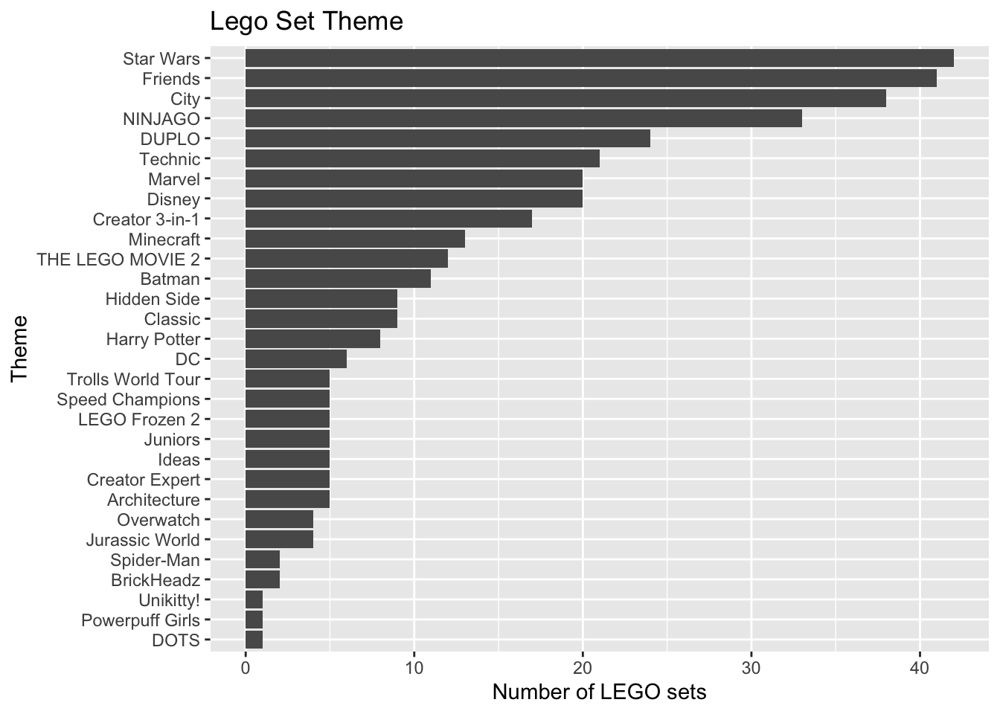

library(tidyverse)
library(tidymodels)
library(knitr)
library(rms)
library(patchwork)
# add other packages as neededHW 03: Multiple linear regression, Part 2
due Monday, November 07 at 11:59pm
Introduction
In this analysis you will use multiple linear regression to fit and evaluate models using characteristics of LEGO sets to understand variability in the price.
Learning goals
In this assignment, you will…
- Use exploratory data analysis to inform feature engineering steps
- Use cross validation to evaluate and compare models
- Assess model conditions and multicollinearity
- Use inference to draw conclusions
- Continue developing a workflow for reproducible data analysis.
Getting started
The repo for this assignment is available on GitHub at github.com/sta210-fa22 and starts with the prefix hw-03. See Lab 01 for more detailed instructions on getting started.
Packages
The following packages will be used in this assignment:
Important
All narrative should be written in complete sentences, and all visualizations should have informative titles and axis labels.
Data: LEGOs
The data for this analysis includes information about LEGO sets from themes produced January 1, 2018 and September 11, 2020. The data were originally scraped from Brickset.com, an online LEGO set guide and were obtained for this assignment from Peterson and Ziegler (2021).
You will work with data on about 400 randomly selected LEGO sets produced during this time period. The primary variables are interest in this analysis are
Pieces: Number of pieces in the set from brickset.com.Amazon_Price: Amazon price of the set scraped from brickset.com (in U.S. dollars)Size: General size of the interlocking bricks (Large = LEGO Duplo sets - which include large brick pieces safe for children ages 1 to 5, Small = LEGO sets which- include the traditional smaller brick pieces created for age groups 5 and - older, e.g., City, Friends)Theme: Theme of the LEGO setYear: Year the LEGO set was producedPages: Number of pages in the instruction booklet
The data are contained in lego-sample.csv. Use the code below to read in the data and remove any observations that have missing values for the relevant variables.
legos <- read_csv("data/lego-sample.csv") |>
select(Size, Pieces, Theme, Amazon_Price, Year, Pages) |>
drop_na()Exercises
Important
All narrative should be written in complete sentences, and all visualizations should have informative titles and axis labels.
Exercise 1
In this analysis, we dropped observations that have missing values for any of the relevant variables. What is a disadvantage of dropping observations that have missing values, instead of using a method to impute, i.e., fill in, the missing data? How might dropping these observations impact the generalizability of conclusions?
Exercise 2
Visualize the distributions of the predictor variables Pieces, Size, Year, and Pages. Neatly arrange the plots using the patchwork package.
Exercise 3
What are some feature engineering steps you might use to prepare the variables in the previous exercise for the model? Describe th step and the function you would use. The list should incorporate at least three different step_ functions.
Tip
Use the recipes reference page for a list of step_ functions.
Exercise 4
The distribution of Theme is shown below. The bars are ordered by the frequency they occur in the data set.
legos |>
count(Theme) |>
ggplot(aes(x = fct_reorder(Theme, n), y = n)) +
geom_col() +
labs(title = "Lego Set Theme",
x = "Theme",
y = "Number of LEGO sets") +
coord_flip()
What is one reason we should avoid putting the variable Theme in a model as is?
Exercise 5
We will use v-fold cross validation to compare two models. We’ll start by preparing the data, creating the folds, and defining the model specification that will be used for both models.
Split the data into training (75%) and testing (25%) sets. Use a seed of
5.Split the training data into 10 folds. Use a seed of
5.Specify the model.
Exercise 6
Use the training data to create a recipe for the first model. The model uses the variables Size, Theme, and Pages to predict Amazon_Price. Conduct the following feature engineering steps:
- Use
step_other()to collapseThemeinto fewer categories. Define the threshold such that any levels ofThemewith fewer than 20 observations is defined as “Other”. - Mean-center
Pages. - Make dummy variables for all categorical predictors.
- Remove any predictors with zero variance.
Then create the workflow that brings together this recipe and the model specification from the previous exercise.
Exercise 7
Conduct 10-fold cross validation using the workflow from the previous exercise. Calculate and display mean RMSE across the 10 folds.
Note
We will just use RMSE to compare models for this assignment; however, in practice, it is best to take into account multiple model fit statistics to get a more holistic evaluation and comparison of the models.
Exercise 8
Now let’s consider a new model that includes all the variables used in model from Exercise 6 along with Year and Pieces.
Use the training data to create a recipe that uses all the feature engineering steps in Exercise 6 with the addition of the following steps:
- Create a new variable called
since2018that calculates the number of years since 2018. - Remove
Yearas a potential predictor. - Mean-center
Pieces.
- Create a new variable called
Create the workflow that brings together this recipe and the model specification from Exercise 5.
Conduct 10-fold cross validation using this model workflow. Calculate and display mean RMSE across the 10 folds.
Exercise 9
Compare the cross validation results from Exercises 7 and 8. Which model do you select based on RMSE? Briefly explain your choice.
Exercise 10
Refit the selected model on the entire training data. Neatly display the model using 3 digits.
Then, calculate VIF for the model and use it to comment on whether there are potential issues with multicollinearity.
Tip
When we fit a model using recipe and workflow, we need to extract the model object before using augment or vif functions. Fill in the name of the selected model in both blanks in the code below to extract the model object and calculate VIF
legos_fit_model <- extract_fit_parsnip(______)
vif(legos_fit_model$fit)Exercise 11
Calculate RMSE on the training data and on the testing data. Use it to comment on how well the model performs on new data and whether there are signs of model overfit.
Exercise 12
Though we do not check the model conditions in this assignment, complete this exercise assuming the model conditions are met.
Describe the effect of Theme on the price of LEGO sets, including an indication of which levels are statistically significant. Use a threshold of 0.05 to determine significance.
Before submitting, make sure you render your document and commit (with a meaningful commit message) and push all updates.
Submission
Warning
Before you wrap up the assignment, make sure all documents are updated on your GitHub repo. We will be checking these to make sure you have been practicing how to commit and push changes.
Remember – you must turn in a PDF file to the Gradescope page before the submission deadline for full credit.
To submit your assignment:
- Go to http://www.gradescope.com and click Log in in the top right corner.
- Click School Credentials ➡️ Duke NetID and log in using your NetID credentials.
- Click on your STA 210 course.
- Click on the assignment, and you’ll be prompted to submit it.
- Mark the pages associated with each exercise. All of the pages of your lab should be associated with at least one question (i.e., should be “checked”).
- Select the first page of your PDF submission to be associated with the “Workflow & formatting” section.
Grading (50 points)
| Component | Points |
|---|---|
| Ex 1 - 12 | 47 |
| Workflow & formatting | 31 |
References
Peterson, Anna D., and Laura Ziegler. 2021. “Building a Multiple Linear Regression Model With LEGO Brick Data.” Journal of Statistics and Data Science Education 29 (3): 297–303. https://doi.org/10.1080/26939169.2021.1946450.
Footnotes
The “Workflow & formatting” grade is to assess the reproducible workflow. This includes having at least 3 informative commit messages and updating the name and date in the YAML.↩︎